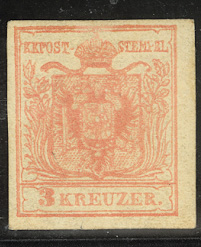
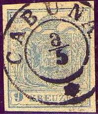
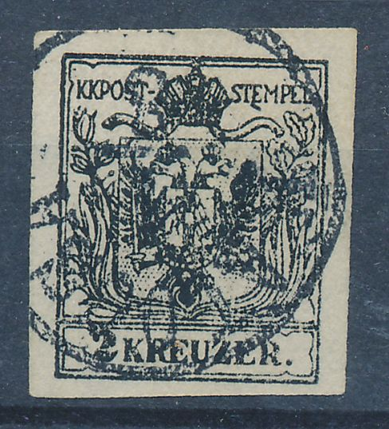
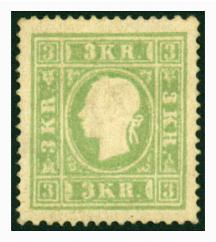
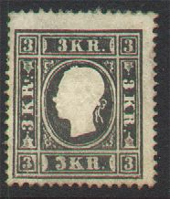
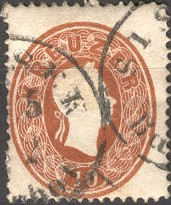
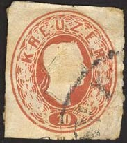

Return To Catalogue - Austria overview - Austria 1863-1889
Note: on my website many of the
pictures can not be seen! They are of course present in the
catalogue;
contact me if you want to purchase the catalogue.

1 k yellow (orange) 2 k black 3 k red 6 k brown 9 k blue
For cancels on these stamps click here. These stamps with value in "CENTES" were issued for Austrian Italy. The stamps were printed on thick or thin paper.
For the specialist, these stamps exist with together with an imprinted cross, example:
(Reduced size)
The 9 k exists in three types, differing in the value part at the bottom.
Value of the stamps |
|||
vc = very common c = common * = not so common ** = uncommon |
*** = very uncommon R = rare RR = very rare RRR = extremely rare |
||
| Value | Unused | Used | Remarks |
| 1 k | RR | R | |
| 2 k | RR | *** | |
| 3 k | RR | * | |
| 6 k | RR | * | |
| 9 k | RR | * | |
I've seen (privately?) rouletted stamps (6 k and 9 k) used in Tokay (see http://www.sandafayre.com/gallery/country_27_1.htm for examples).

Rouletted 1 k stamp used in Tokay
Official reprints were made in 1865, 1871 and 1884. They are difficult to distinguish from genuine stamps. Sometimes the colours, paper and gum are slightly different. The last reprint of 1884 has a sheet watermark 'BRIEFMARKEN'.


1871 (or 1870?) reprint of the 6 k and 1884 reprint of the 9 k
value.Note the break over the 'TE' in the inner upper frameline
in the 6 k value.
I have also seen stamps in similar designs, but with the bottom value inscription changed to '1881.' or '1890'. They were produced 'on the spot' at the Vienna 1881 and 1890 stamp exhibitions organized by Sigmund Frield:


In the 1881 design I have seen: blue, blue on
yellow, blue on red, blue on yellow (all imperforate) and blue
(perforated). I have also seen partly perforated and doubly
perforated stamps.
In the 1890 design: perforated: yellow, orange, green, black,
lilac, blue, red; imperforate: yellow on blue, black, red on red,
green, green on lilac and brown on brown.
I have seen the 1890 brown on brown stamps in a sheet of 16
stamps (4 x 4).
Examples:


First forgery of Album Weeds. Badly done with inscription
"TEMPEL" instead of "STEMPEL".

(Forgery; stamp and cancel forged)

Forged 2 k stamp, with the leaf pattern different
Unissued 12 k stamps:

A 12 k blue value was prepared, but not issued. The 7 or 8
remaining stamps were cancelled 'Franco' as shown above.
 
A forgery of the non-issued 12 k blue stamp (I've seen other
forgeries of this stamp, all with the "WIEN 10/11 8A"
cancel). Next to it a forgery of Austrian Italy (10 c);
apparently made by the same forger. And some 2 kr forgeries from
the same source with a "KALOCSA" cancel. Note the
emptiness of the curved ornaments coming out of the bottom of the
crown. Also, the letters are not nicely done. The heads of the
eagle are too white.


Modern forgeries: The above forgeries seem to be printed on
relatively modern paper. Furthermore the design is slightly
blurred. The framelines above "KKPOST" are smeared
together in all values. The same set exist for the first stamps
of Lombardy-Venice (see last 2 scans). More examples of these Italian States modern forgeries can be
found here.

A badly printed blue stamp with only "KREUZER" and no
value inscription. A small "45" is printed on top. Not
sure what this was used for or who made it.





2 k yellow 3 k black 3 k green (1859) 5 k red 10 k brown 15 k blue
These stamps are perforated 15 (reprints have different perforation). Specialists distinguish two types of these stamps; in Type 1, the ribbon at the back of the head is thin and in the shape of a '3', furthermore the spikes at the front of the head are not very large. In Type 2, the ribbon at the back of the head is thicker and forms a '8', the spikes at the front of the head are more prominent.
Value of the stamps |
|||
vc = very common c = common * = not so common ** = uncommon |
*** = very uncommon R = rare RR = very rare RRR = extremely rare |
||
| Value | Unused | Used | Remarks |
| 2 k | RRR | *** | |
| 3 k black | RRR | RR | |
| 3 k green | RRR | RR | |
| 5 k | RR | c | |
| 10 k | RRR | * | |
| 15 k | RRR | * | |
This issue also had Andreas crosses (Andreas Kreuz) in the sheets, now the cross is white on a background in the colour of the stamp, example:

(Andreas Cross of a red 5 k stamp)
Forgeries, example:

These stamps with value in "SOLDI" were issued for Austrian Italy.
For the specialist: these stamps were perforated 15. Reprints exist perforated 10, 10 1/2, 11, 12, 12 1/2 or even imperforate. Reprints are always in Type 2. Examples of reprints:

What is this? An imperforate 10 k stamp in the wrong colour
red.... A proof maybe?
Similar designs, with inscription "K.K. ZEITUNGS POST STEMPEL" are newspaper stamps.



2 k yellow 3 k green 5 k red 10 k brown 15 k blue
These stamps are perforated 14. Similar stamps with value in
"SOLDI" were issued for Austrian
Italy.
Envelopes with the same design exist, I've seen the following
values: 3 k green, 5 k red, 10 k brown, 15 k blue, 20 k orange,
25 k brown and 30 k lilac (the value 35 k brown should also
exist). Reprints of these envelopes were made in 1865, 1871, 1885
and 1889 are much cheaper than genuine envelopes.
Value of the stamps |
|||
vc = very common c = common * = not so common ** = uncommon |
*** = very uncommon R = rare RR = very rare RRR = extremely rare |
||
| Value | Unused | Used | Remarks |
| 2 k | R | *** | |
| 3 k | R | *** | |
| 5 k | R | c | |
| 10 k | RR | * | |
| 15 k | RR | * | |
Similar design, inscription "K.K. ZEITUNGS POST STEMPEL" is a newspaper stamp.
Reprints exist, they have a different perforation (the originals have perforation 14). Three different kinds of reprints seem to exist; made in 1865, 1871 and 1884.

(reprint)

This is probably a reprint of an essay of 1860; so-called
Radnitzky essay. The inner frame line in the upper right hand
side is very weak (a distinguishing characteristic of the reprint
according to the reprint book of Ohrt).

Most of these forgeries are cancelled with dots, here a full
sheet.
I posess some imperforate forgeries of a (non existing) 20 k brown value (block of four stamps). This might have been ment to forge the postal stationary. They are imperforate and have no embossing. The hair on the forehead of the Emperor points towards the bottom of the 'Z' of 'KREUZER', in the genuine stamps it points exactly to the middle of this letter. They are cancelled with a rectangle with dots (probably the fastest way to recognize them). I have also seen whole sheets of the 25 k brown and 35 k light brown value (also cancelled with dots). The above forgery of the 10 k was probably made by the same forger. They are possibly made by Spiro, similar forgeries exist for Austrian Italy.
Two other primitive forgeries. Possibly badly printed ones from
the same origin as the forgery shown above. They have a "ZEITUNGS EXPEDITION" cancel.
For issues of Austria from 1863 to 1889 click here.
Stamps - Briefmarken - Timbres-Poste


{kind=link}
{kind=link}
{kind=link}